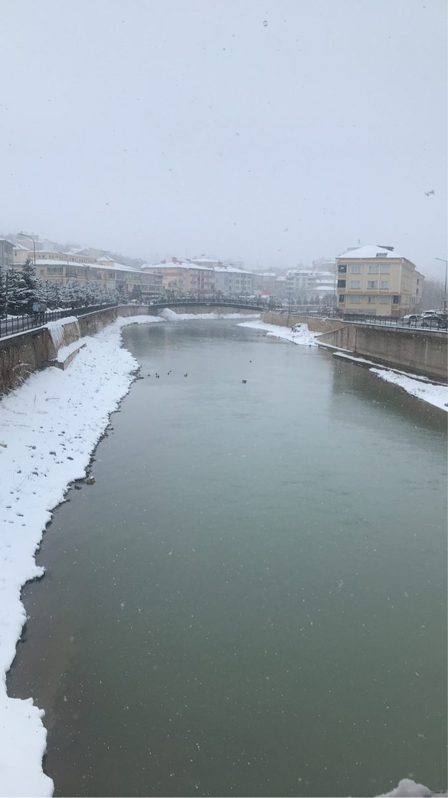

ŞevvalÇikot
Computer Programming · Akdeniz University
This portrait is made of 16,000 particles of light. Move your cursor over it, click an empty spot, then scroll down: in every section the particles turn into a new shape.
about
About me, briefly
Hi! I'm Şevval Çikot. I have been studying Computer Programming at Akdeniz University since 2025.
I graduated from Bayburt Rekabet Kurumu Girls' Anatolian High School. My curiosity about technology led me to this field, and I am currently improving myself in artificial intelligence.
what-i-do
Fields I work on
- 01
Graphic Design
Visual and design work with Adobe Photoshop.
- 02
Web Design
Learning to build web pages with HTML and CSS.
- 03
Programming
Exploring the basics of programming with C#.
- 04
Writing
I love putting my thoughts and what I learn into writing.
gallery
Go to gallery Photos of the places I studied



blog
All posts